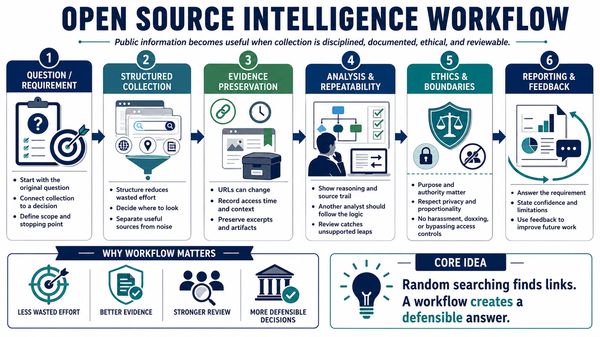

Why OSINT Needs a Workflow
Connecting to LMS... Progress: in progress

Narration
Open Source Intelligence becomes useful when public information is collected and assessed through a disciplined workflow. Random searching may produce interesting links, but it rarely creates a defensible answer. A workflow connects the original question to sources, evidence, reasoning, and a decision-relevant result.
Structure reduces wasted effort. Clear stages help analysts decide where to look, when to stop, and which material deserves deeper review. Without boundaries, collection can expand indefinitely while important sources, dates, and assumptions disappear into browser tabs and personal notes.
A workflow also preserves evidence. URLs can change, pages can be updated, and search results can move. Recording source context, access time, relevant excerpts, and approved preservation artifacts allows another reviewer to understand what was available when a judgment was made.
Repeatability improves quality. Another analyst may not reproduce an identical search ranking, but they should be able to follow the requirement, collection logic, source trail, and analytical reasoning. Review exposes unsupported leaps, duplicated claims, and missing alternatives before they shape a decision.
Ethics belongs in every stage. Purpose, authority, privacy, proportionality, and access boundaries determine what should be collected and retained. Public visibility never authorizes harassment, doxxing, impersonation, access-control bypass, or unlawful surveillance.
A mature workflow ends with reporting and feedback. The result should answer the requirement, explain confidence and limitations, and identify proportionate next steps. Feedback from the consumer then sharpens future questions, sources, methods, and reporting.